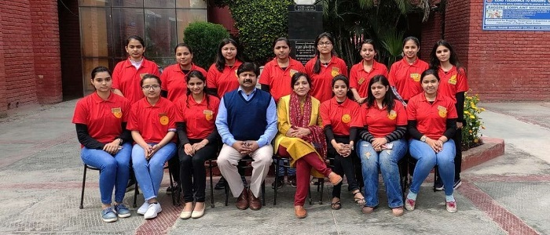
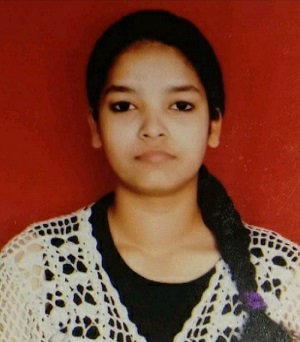
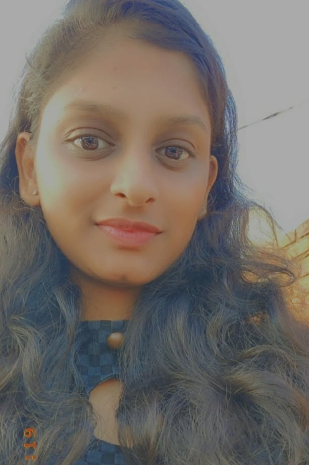

NSS SPMC: Vision For Mission
Setting up of any organisation, comes with setting up of various values. The only moto of education institutions is not just to provide education, but it has extended its boundaries in every field like research, sports, extracurricular activities. One choice that comes around quickly for students is selecting their extracurricular activities for the first term as students get the chance to build their skills and interests in an environment without the pressures of a formal classroom setting. NSS, National service scheme is a community service programme with the objective of building a better tomorrow. The motto of NSS is “not me, but you”. This motto reflects the need for selfless service. The motto underlines the fact that the welfare of an individual ultimately depends on the welfare of the society. NSS is often defined as the third dimension of Indian Higher education System. It is always misunderstood as a platform for social service. Yes, it is but the primary aim is personality development of students. Therefore, NSS always works for the benefit of the whole society.

National service scheme was started on 24 September in 1969, hence, every year 24th day of September is celebrated as NSS day. Shyama Prasad Mukherji college for women is a constituent college of Delhi University and was found in the memory of Dr. Shyama Prasad Mukherji in 1969.With almost more than 50 years in the field of education, SPMC has also completed 50 years in imparting a social change. The NSS chapter of SPMC comprises of gamut of events and activities undertaken by volunteers who have channelized their creativity and volunteerism to bring long term change.
With more years of providing social services, it is very important to appreciate the efforts of the person who is leading the change. In the same way, NSS UNIT of SPMC runs under so much influential change makers. We must take some time from our daily lives and must always know about these changemakers that how they got inspired to bring the change by being the change.
.jpeg)
Prof. Rajkumar Falwaria
(Convenor, Programme Officer)
(Department of Political Science, NSS, SPM COLLEGE)
: -
NSS is the largest society of the college and it has Volunteers coming from various disciplines and walks of life. We work under different wings that allow us to promote welfare and development in a plethora of fields, namely: Education, Health, Rural development, leadership, social activism etc. NSS cannot be judged as a service scheme only it is beyond that. We try to inculcate in our peers a sense of responsibility towards the society, the Nation and most importantly, equip them with values for life. We believe that since you get more joy out of giving joy to others, you should put a good deal of thought into the happiness that you are able to give. We wish to make the world a better place to live for all, socially and environmentally. For me, it is a sense of social responsibility that every individual must have from the beginning.
Right from the very beginning, I was involved in every political activity that happens around me. Working in such fields for more than a decade, I realised my responsibilities for the society more. SPMC is itself named after Dr. Shyama Prasad Mukherji, who has contributed a lot in the fields of politics and society. He famously claimed (Ek Desh Mein do Vidhan, do Pradhan aur Do Nishan Nahi Challenge), and it is evident today also. Rule must be same for everyone, irrespective of what background they are coming from. NSS SPMC, similarly works in the idea of one nation, one service. It was an experience of my lifetime. Although people generally see NSS as a group of people indulged in community service, but a person who has been an integral part of NSS like me sees it in an altogether different way. And I will say, "All people should think to give a little part of their life to help, you will lose nothing but get a different type of happiness".
NSS SPMC has departments spanning all avenues of community service right from educating the underprivileged to innovating solutions to social problems using technology.Spreading happiness through community service has been one of the primary objectives of NSS SPMC. With innovative activities across the departments catering to all classes of the campus residents, we try to create small, happy and memorable moments in their lives. And working in NSS itself has been one of the prime sources of happiness for the people associated with us.
Sense of responsibility among the new generation towards a new ideology that can bring transformation in the future.
Change is not a one-day process, but how you are involved in bringing the change is important. I put a part of my life, directly to this service and there is a great sense of satisfaction that comes from within. Every youth should decide it from the very beginning that they must give something without any bias. Your actions in the present determine the future outcome. In the present scenario, we must look for options that brings change and sustainability at the same time. The heads of any authority keep on changing but we must focus on how we can forward the legacy of social responsibility for ages. With the experiences from NSS, I am sure that all volunteers, office bearers and upcoming office bearers will learn how to lead a life of dignity with positive mind set and contributes to the growth of nation by some or other.
.jpeg)
Dr.Urmil Vats
(Co-Convenor)
(Department of Political Science, NSS, SPM COLLEGE)
: -
I have spent like two year as a convenor in NSS SPM unit. Now I am serving as co-convenor along with Raj Kumar sir. We have been serving in NSS since a long time and throughout this journey, it was an amazing experience. NSS for me is development of Student’s personality through community service.
I have always had this feeling to do something for a good cause without any expectations because wherever there is a human being there is a opportunity for kindness. We all are a social animal and no man can break the shackles of mutual dependence. We are here to help and grow together.
So in our college ,we focus on other activities along with studies which helps students in their personality development and development inter-personal skills like we have dance society, artistry society, Navrang-the theatre society of SPMC, sportsman and our NSS. We have a lot of volunteers and office bearers who works together to make this service a success.
Being in NSS means a lot to me. It focuses on the identification of the problems prevailing in the society and the need to bring the change from the grassroot level. We create awareness for making our society a better place to live. Always!For that, every year we allot some posts to our office bearer. Like, we have President, Vice President, general secretary, student heads, PR heads etc. And our role is to supervise and help them for holding this unit together and shape their personalities. I motivate every student to build a strong society every day. I love working with them as it gives me immense pleasure daily and helps to make a difference for a good cause.
My message to all the volunteers, office bearers and upcoming students is that I am always there for you all. Whenever you feel overwhelmed with ideas, just create a to do list and focus on it. Whenever you feel stressed just talk to your mentors, seniors. The best way to find yourself is to find a true reason in your life and you should always be ready to devote a part of your life to make that reason a beautiful reality.

Mansi
(President)
(B.Com Program, NSS, SPM COLLEGE)
: -
An opportunity to learn and experience ever dimensions of life. For me, it turned out to be a "SELFLESS SERVICE". NSS can bring such laurels to one’s life. I am very thankful to our NSS TEAM who motivated me to join NSS, appreciated me on my every success and inspire us to do new and creative things that will help us to shape our future.
My experience working with NSS, is a magical journey itself. Starting from a normal volunteer to being the general secretary and then working hard enough that the teachers felt me suitable for the important post of President. I have held my team. We worked as a team from the very beginning. Neither I left anyone in any decisions, nor they did it. When my team needed me, I was there to motivate them and when I felt down, they were the one who supported me. NSS taught me spirit of teamwork, developed leadership skills in me. I got a fully developed personality in this span of time. It taught me communication skills, which initially I did not have. How to treat society and people is the main lesson, I learnt from NSS. Because even if you grow old, start earning but many still lack the social values that are required in every phase of life. Our parents teach us the values, but NSS has given me opportunity to redefine it.
We are different from other units in a way that, we learn many life lessons, skills and we ultimately get a bonding with society and selves that other units lack.
NSS SPMC gives equal opportunity to ever student to know their strengths and opportunities for improvement and work for the same. It gives us learning with a free mind and provides us the opportunity to develop the skills further and use it for the society.
For everyone, I would like to say," One should serve at NSS, at least once in a lifetime because the feeling of happiness you get after giving something is unbeatable and trust me ,you won't feel the same even if you earn so much in your life. Earning gives you status, which although is important but after serving society you get inspiration and satisfaction at the same time." Sometimes there was lack of time for friends but yes, everything used to go well. I do not remember how the loop started, whether I kept myself busy because of lack of friends, or whether I lacked friends because I was always busy, but the fact was that being busy was somehow essential to me. You are the future and now give at least some part of your life to this service. You will feel different. Do not restrict your boundaries, because boundaries just fence you inside, there are so much of good in this world, keep looking for opportunities and keep serving till your last.While doing the social service it will not be about outside that you will be developing, you all will be developing yourselves.

Ayushi Garg
(Vice President)
(B.Com Hons., NSS, SPM COLLEGE)
: -
I like most other NSS volunteers, started my journey with NSS, while filling up the admission form. In the first year of my college, I was like every other volunteer, serving for the sake of hours. But eventually, after serving for a few months, I searched about NSS more out of curiosity. As I have been tilted towards helping people since always, I got to know that this is what NSS is all about. I had a great opportunity in my hand, so I should use it. Then when I got in second year, I gave interview for the post of office bearers and got selected for the post of joint secretary. With other office bearers and volunteers, I work very hard and took our NSS some more steps forward. We won many competitions, held many events successfully and in the third year I got selected for the post of vice president of NSS SPMC. NSS has provided me opportunities and I grabbed them. NSS to me was a life changing experience and it was really a great feeling working together with the same objective.
Words will fall short if I attempt to describe my experience with NSS. NSS is worth an attempt! My memories with NSS are countless, and I can't highlight one without offending the others. NSS was definitely a boon to me, and I can't thank it enough for the memories, the lessons, the exceptional seniors, colleagues (all of whom taught me so much), the maturity and the overall transformation in my personality that it brought about. With Mansi I tried to differentiate and make our NSS better than other colleges and other units. I had many such experiences in NSS which made a remarkable impact and will always be remembered.
In our college, we work, we arrange events whereas in other colleges they are just socially active. We on the other hand are socially as well as physically active in all the forms.
I had one of my best experience working with NSS. Sometimes it got hectic, but it was always satisfying that we are working together for bringing a positive change.
For volunteers and the coming students, I will say that you should work and serve NSS not for the sake of hours only. Serve NSS as your duty towards society and it will give satisfaction to you all. "One should join NSS at least once, just try to give social help. At the end of the day, you will realise that you are the happiest person on this earth."
NSS provided the perfect escape to everyone. But alas, it came to an end for the President and the Vice President, like all things do! Working with NSS has transformed the lives of many. NSS SPMC, reached new heights under Mansi and Ayushi working as President and Vice President. What they have provided to NSS will always be remembered and will be taken forward by the upcoming office bearers and volunteers. We are very thankful to our NSS programming officers who motivated every student to work for NSS, appreciated their efforts on every success and inspired them to do new and creative things that will help the students to shape a better future.